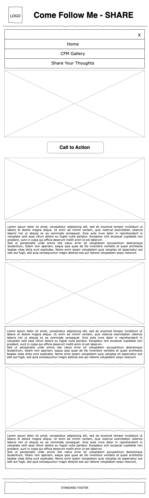
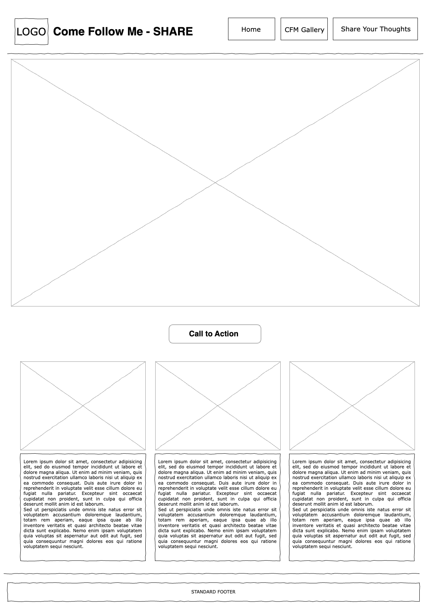

Site Name
Come Follow Me - Share
This name was selected because it clearly represents the website's focus to share thoughts, wisdom, and testimonies making it easily recognizable and relevant.
Plan Site URL: share.comefollowme.com
Site Logo
The logo will be a simple design from one of Come Follow Me Material.

Site Purpose
The site purpose is to provide added motivation and help to members of the church to come prepared during Sunday School class and encourage Family Come Follow Me reading through their handheld device or gadget that is easily accessible in day to day living.
Scenarios
- What is the current Come Follow Me Lesson?
- How can I view past and future Come Follow Me lessons?
- How can I contribute and share my thoughts or question regarding Come Follow Me?
Color Schema
- Dark Blue: Used for headings, accents, and primary elements.
- Yellow Gold: Used for buttons, link hover effects, and secondary elements.
- SmokeWhite: Used for background colors.
- Black: Used for primary text color for readability.
- White: Used for text color option 2.
Typography
- Roboto: Used for headings and titles with larger weight. Used for body text and paragraphs with smaller weight and additional italic.
Wireframe
Mobile View
Desktop View
Pages
Home
The Home page will provide an overview of the website and will show the three most current CFM Lesson.
CFM Gallery
The CFM Gallery will show a gallery of Come Follow Me lesson from diffent topic and time.